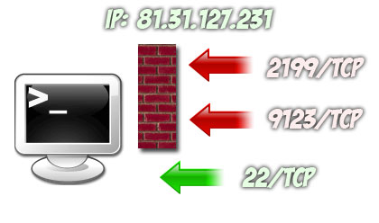
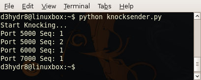

Playing with port Knockers
by d3hydr8 > www.darkc0de.com
date: 09/29/08
Description:
In this tutorial we will show a basic technique for "port knocking". We
will be using some python code, ubuntu's firewall (ufw) and brain cells.
Any firewall can be used for this example but ufw was easily accessible and
easy to setup at the time. Lets look at the port knocking definition in the
wiki:
---------------------------------------------------------------------
port knocking is a method of externally opening ports on a firewall by
generating a connection attempt on a set of pre-specified closed ports.
---------------------------------------------------------------------
*Disclaimer: I'll take this time to say I'm not a professional, I thought myself
so if there are better ways of doing any of this, share with us.
Basically we need 2 scripts (client, server):
Script 1: send some kind of requests remotely to a host on closed ports
Script 2: host read its firewall log and change the rules
if the right requests to those closed ports match.
(You don't have to use a firewall log to register knocks, I have seen many
techniques including using tcpdump)
For those of you who learn better with pictures (who doesn't).
We send a sequence of knocks to the closed
ports on host 81.31.127.231 ports 2199 and 9123. Then the script on
that side reads these knocks and opens port 22.

Alright, by now we should know what port knocking is and what tools we
need to get the task done. If you need a more advanced description and
more details.
http://en.wikipedia.org/wiki/Port_knocking
Step 1: Setting up a Firewall & Testing
The firewall ufw comes default in Ubuntu's distribution. We want to
set it up to DENY all requests and log any information. Here are
the commands I used to get it started:
---------------------------------------------------------------------
# ufw enable //turns ufw on
# ufw logging on //turns logging on
# ufw default deny //blocks all requests
# ufw status //checks the status
For Later:
# ufw allow|deny [service] //This is the command we will use to open up a port
when the right sequence of knocks is reached
---------------------------------------------------------------------
Ok, now that we have our firewall up and logging. Lets test it.
We can run a simple python script that will open up a port and then
send telnet requests from a different computer. Then view the log file
to see what happened.
This script will open up port 6000 and wait for connections:
(Yes, we could use netcat -vv -l -p 6000 but what is the fun
in that?)
!!All python code will be heavily commented to show what exactly is going
on. If you find it harder to read, take out the lines starting with #
---------------------------------------------------------------------
#!/usr/bin/python
#openport.py
import socket
#Set host and port to open
host = '192.168.1.101'
port = 6000
#Create a socket object with the communication type (AF_INET=IPv4
#and protocol family (SOCK_STREAM=TCP)
s = socket.socket(socket.AF_INET, socket.SOCK_STREAM)
#Bind(open) to host and port.
s.bind((host, port))
#Start listening for connections (max: 1)
s.listen(1)
print "Listening:",host,port
while 1:
#Get response from connection and print output
#Then close the socket.
clientsock, clientaddr = s.accept()
print "Got connection from:",clientsock.getpeername()
clientsock.close()
---------------------------------------------------------------------
Now lets run this script which will open up port 6000 and try
to connect to it remotely and see if our firewall is working
correctly.
First when we run the script we should see something like this:
---------------------------------------------------------------------
linuxbox:/home/d3hydr8# python openport.py
Listening: 192.168.1.101 6000
---------------------------------------------------------------------
Now lets use telnet to connect:
telnet 192.168.1.101 6000
Eventually you should get a timeout message from telnet and a view of
your /var/log/messages file will show the reason.
Firewall Output:
---------------------------------------------------------------------
[UFW BLOCK INPUT]: IN=eth1 OUT= SRC=192.168.1.102 DST=192.168.1.101 LEN=60 TOS=0x10 PREC=0x00 TTL=64 ID=12705 DF PROTO=TCP SPT=57254 DPT=6000 WINDOW=5840 RES=0x00 SYN URGP=0
---------------------------------------------------------------------
As we can see our request was denied by our firewall from:
SRC=192.168.1.102 on port DPT=6000
By now we should have a working firewall running and be able to
view the log.
Step 2: Writing Client for Sequenced Requests
Now we need a script that will send a sequence of requests to a
host on closed ports.
I will explain this code here instead of commenting every line.
First: setup ip where to send knocks
host = "198.162.1.101"
Second: Setup our knock sequence
---------------------------------------------------------------------
#Sequence: PORT:REQUESTS
seq = {5000:2,
6000:1,
7000:1}
---------------------------------------------------------------------
As you can see we are going to send 2 requests to port 5000, 1 to 6000
and 1 to 7000. Data setup like this in python is called a dictionary.
key:value in our case port:knocks
Third: Setup a socket default timeout (self explanatory)
socket.setdefaulttimeout(5)
Forth: Setup our loops and requests. The first loop as you can see goes through
our seq dictionary (port:knocks) and the second loop takes care of how many knocks
is requested per port. The loop will be:
5000
5000
6000
7000
Fifth: Is the actually knock. You can see the only difference in setting up this socket
compared to openport.py is socket.SOCK_DGRAM. This will make it UDP, we can get into
why I used UDP and not TCP but that is beyond this tutorial. Google search TCP vs UDP.
So, we setup our UDP socket, connect to host:port, and send a nice message "Knock Knock"
*follow the white rabbit...
The Code:
---------------------------------------------------------------------
#!/usr/bin/python
#knocksender.py
import socket
host = "198.162.1.101"
#Sequence: PORT:REQUESTS
seq = {5000:2,
6000:1,
7000:1}
socket.setdefaulttimeout(5)
print "Start Knocking..."
for port, knocks in seq.items():
for x in xrange(knocks):
print "Port",port,"Seq:",x+1
try:
s = socket.socket(socket.AF_INET, socket.SOCK_DGRAM)
s.connect((host, port))
s.sendall("Knock Knock")
s.close()
except(socket.timeout):
s.close()
---------------------------------------------------------------------
Ok, Pretty simple right? Now lets run it on a remote machine and see what
our firewall gets.
When ran you should see this:

Now lets look at the firewall output ("tail -5 /var/log/messages")
---------------------------------------------------------------------
[UFW BLOCK INPUT]: IN=eth1 OUT= SRC=192.168.1.102 DST=192.168.1.101 LEN=39 TOS=0x00 PREC=0x00 TTL=64 ID=20557 DF PROTO=UDP SPT=57004 DPT=5000 LEN=19
[UFW BLOCK INPUT]: IN=eth1 OUT= SRC=192.168.1.102 DST=192.168.1.101 LEN=39 TOS=0x00 PREC=0x00 TTL=64 ID=21307 DF PROTO=UDP SPT=34354 DPT=5000 LEN=19
[UFW BLOCK INPUT]: IN=eth1 OUT= SRC=192.168.1.102 DST=192.168.1.101 LEN=39 TOS=0x00 PREC=0x00 TTL=64 ID=22057 DF PROTO=UDP SPT=56035 DPT=6000 LEN=19
[UFW BLOCK INPUT]: IN=eth1 OUT= SRC=192.168.1.102 DST=192.168.1.101 LEN=39 TOS=0x00 PREC=0x00 TTL=64 ID=22807 DF PROTO=UDP SPT=43011 DPT=7000 LEN=19
---------------------------------------------------------------------
The 2 important things to look at in this output is your PROTO=UDP, so we know
the UDP socket is working. Also check out the DPT (destination port). The DPT
goes 5000,5000,6000,7000 just like we wanted according to our sequence.
Now we have a script that can send a sequence of knocks and our firewall is
blocking the requests.
Step 3: Watching Log File / Opening Service
Now we need a script that will watch that log file for our
knock sequence and run a command if its been reached.
The 2 variables we are going to have to monitor is SRC which is your source
address (where the knock is coming from, SRC=192.168.1.102) and our DPT which
again is the destination port (DPT=5000). For an extra check you might
want to monitor the PROTO and make sure its UDP (or whatever you choose).
For the sake of making this look easy we will only monitor those 2 values and
let the PROTO check be extra credit.
I'm going to heavily comment this code so we can see what its doing. Then we
will test it out and show the output you should receive.
---------------------------------------------------------------------
#!/usr/bin/python
#knockcheck.py
import time, os
#IP where knocks are coming from
SRC = "198.162.1.102"
#Log file location
LOG_FILE = "/var/log/messages"
#CMD to open firewall
#CMD1 = "ufw allow 54321"
#CMD to run when sequence is reached
CMD2 = "python openport.py"
#Here is the sequence, same as in knocksender.py
#Sequence: PORT:REQUESTS
seq = {5000:2,
6000:1,
7000:1}
#This function will check the seq dictionary against the
#new knocks dictionary being created. If they match
#it will run the CMD's above.
def knockcheck():
if cmp(seq,knocks) == 0:
print "\Sequence Confirmed: Running CMD\n"
os.popen(CMD1)
os.popen(CMD2)
return 0
#Start the length of the log at 0
start = 0
#Create the new dictionary to compare to seq
knocks = {}
#This is our main infinite loop that will continuously monitor our
#log file
while 1:
#Infinite loops without this are bad.
time.sleep(1)
#Open up the log file and read the lines
log = open(LOG_FILE, "r").readlines()
#This for loop with run through every line in the log file
for line in log[start:]:
#This for loop with check for the ports in your seq dic in each
#line of the log file.
for port in seq.keys():
#This is your check for SRC and DPT
if line.find("SRC="+SRC) and line.find("DPT="+str(port)) != -1:
print "\nKnock:",port,"port"
#If they are found this will add to your knocks dictionary
if port in knocks.keys():
knocks[port] += 1
#If the request is greater then in the seq dictionary
#reset the dictionary
if seq[port] < knocks[port]:
knocks = {}
else:
knocks[port] = 1
print "Sequence:",knocks
#This will run our knockcheck function from above
i = knockcheck()
#If the sequence is hit then reset the knocks dictionary
if i == 0:
knocks = {}
#This block helps to not re-read lines in the log file
#and if some are deleted (/etc/logrotate.d) correct itself.
start = len(log)
if len(log) < start:
start = len(log)
---------------------------------------------------------------------
Ok, now we can test it. Just set your variables:
SRC = "198.162.1.102"
LOG_FILE = "/var/log/messages"
CMD1 = "ufw allow 54321"
CMD2 = "python openport.py"
The first CMD you want to set is your firewall rule. In this case we
are using ufw so we use the command "ufw allow 54321" which will open
up port 54321 to the outside world.
Why 54321? The second CMD usually will start SSH, RDP, VNC, etc. but
in this case we setup openports.py to open port 54321.
As you can see it is closed now.
---------------------------------------------------------------------
root@linuxbox:/home/d3hydr8# nmap 192.168.1.101 -p 54321
Starting Nmap 4.76 ( http://nmap.org ) at 2008-10-03 11:41 EDT
Interesting ports on 192.168.1.101:
PORT STATE SERVICE
54321/tcp closed unknown
Nmap done: 1 IP address (1 host up) scanned in 0.14 seconds
---------------------------------------------------------------------
Lets run knockcheck.py and then knocksender.py and see if we can change that.
---------------------------------------------------------------------
d3hydr8@linuxbox:~$ python knockcheck.py
Knock: 5000 port
Sequence: {5000: 1}
Knock: 5000 port
Sequence: {5000: 2, 6000: 1, 7000: 1}
Knock: 6000 port
Sequence: {5000: 1, 6000: 1}
Knock: 7000 port
Sequence: {5000: 1, 6000: 1, 7000: 1}
Sequence Confirmed: Running CMD
---------------------------------------------------------------------
Here is the output from knockcheck and everything looks good. Lets check nmap
and see if openports.py has opened 54321 for business.
---------------------------------------------------------------------
root@linuxbox:/home/d3hydr8# nmap 192.168.1.101 -p 54321
Starting Nmap 4.76 ( http://nmap.org ) at 2008-10-03 11:44 EDT
Interesting ports on 192.168.1.101:
PORT STATE SERVICE
54321/tcp open unknown
Nmap done: 1 IP address (1 host up) scanned in 0.14 seconds
---------------------------------------------------------------------
And sure enough we are open for attacks.
Now knockcheck has a reset feature so if something went wrong you
can just send one of the ports in your seq dictionary more requests
then it wanted and it will reset the sequence.
Lets test it out.
---------------------------------------------------------------------
d3hydr8@linuxbox:~$ python knockcheck.py
Knock: 5000 port
Sequence: {5000: 1}
Knock: 5000 port
Sequence: {5000: 2}
Knock: 6000 port
Sequence: {5000: 2, 6000: 1}
Knock: 6000 port
Sequence: {}
---------------------------------------------------------------------
As you can see we sent port 6000 more than the sequence was asking
so it reset the dictionary for us. Now we can start knocksender
again.
Well, that's about it for this tutorial. I'm thinking about
writing another one, a little more advanced. That one would include
encrypting your traffic and authenticating before knocking. Stop in the
forum and let me know. There will be a post in the tutorials section
regarding this paper.
I hope you enjoyed our time together and maybe learned something
about port knocking, python, sockets etc....
Support the c0de at darkc0de.com
-d3hydr8
d3hydr8[at]gmail[dot]com